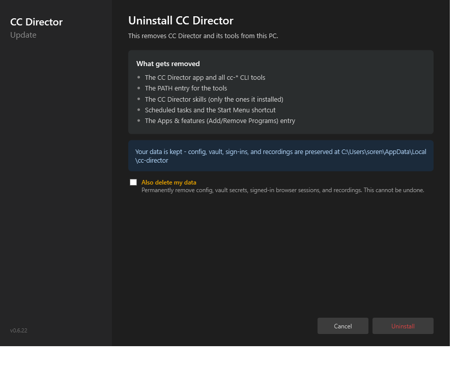
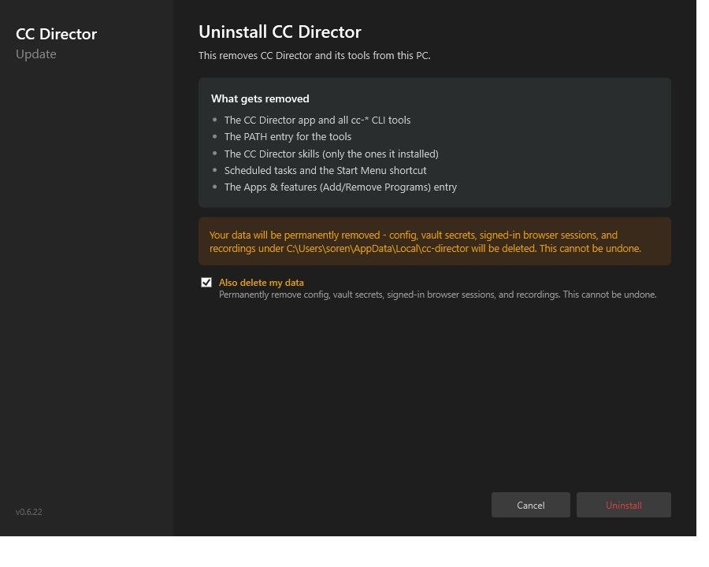
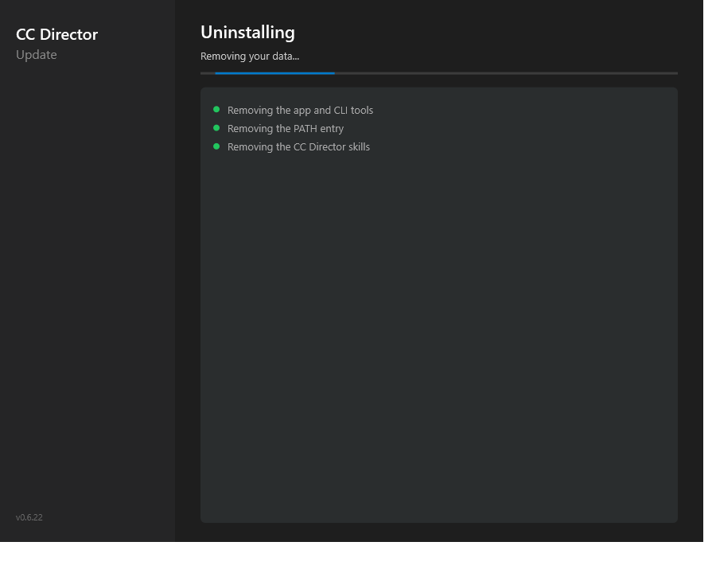
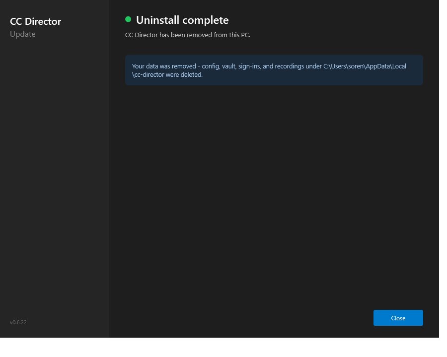

tools/cc-director-setup) + engine (tools/cc-director-setup-engine) - a clean, opt-in full wipe of the entire per-user CC Director data root, layered on top of the in-wizard uninstall flow from #265. First fully-provable slice of issue #261 (Phase 2 uninstall).Uninstaller.Apply(role, progress, bool deleteData = false) - when deleteData is true, a new final step WipeUserData(...) runs AFTER all install-owned removals, reporting "Removing your data". Default false is byte-for-byte the old behavior.WipeUserData refuses to delete unless the root's leaf folder is exactly cc-director (case-insensitive), so a mis-set LocalRoot can never wipe an arbitrary directory.Uninstaller.Apply(..., deleteData: _deleteData); the completion view then reports either "data was removed" or the normal "data is kept" note.
Blue "Your data is kept" card. The amber "Also delete my data" checkbox is present but unchecked - identical removal behavior to before.

Checking the box swaps the card to an amber warning: "Your data will be permanently removed ... This cannot be undone."

Current action "Removing your data..." + indeterminate bar + completed steps with green dots. The wipe runs LAST, after the install-owned removals.

Green dot + "Uninstall complete"; the data card now reads "Your data was removed ... were deleted." (When the box is left unchecked it instead reads "Your data is kept".)
The four views were screenshotted live by driving the wizard with a FAKE runner (no real deletion) via a temporary, env-var-gated demo trigger (CC_UNINSTALL_DEMO=1) that was removed before commit. No real destructive uninstall was run on this machine.
WipeUserData_DeletesEntireRoot_WhenLeafIsCcDirector - happy path against a TEMP root whose leaf is cc-director.WipeUserData_RefusesRoot_NotNamedCcDirector - the safety guard refuses a non-cc-director root and leaves its contents intact.WipeUserData_RootAbsent_ReportsSkipped_NotError - an absent root is reported as skipped, never an error.Setup wizard builds clean (0/0); all 22 engine Uninstaller tests pass (19 existing + 3 new), so the default deleteData=false path is unchanged.